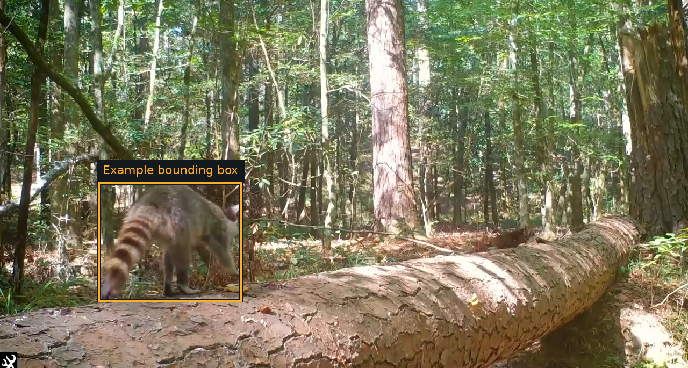

Homework 09: Tracking with Optical Flow
Total: 5 points
Submission: Gradescope Programming Assignment
Work: Individual
Objective
Use optical flow to automatically detect and track a happy raccoon in a trail camera video. Return a bounding box for the animal in each frame, including when it briefly pauses.
Use the course cv Conda environment. You may adapt the lecture examples. Do not use generative AI to solve this homework.

[x, y, width, height] = [181, 337, 270, 225]. Return a box for each frame; the figure uses a public reference annotation.
Starter files
Download hw09_Starter.zip and extract it into one folder.
| File or folder | Purpose |
|---|---|
| hw09.py | Implement track_animal(frames) |
| evaluate.py | Run the public clip, calculate its score, and save overlays |
| hw09_support.py | Provided loading, interface checks, and scoring |
| public_references.csv | Public bounding-box annotations |
frames/ |
Numbered public raccoon frames |
| raccoon_reference.mp4 | Original video clip for viewing only; separate download |
The video frames are supplied and sampled at 10 frames per second. Each image is 1280 pixels wide and 685 pixels high. Do not subsample a second time.
Keep the provided evaluator, support, frames, and reference annotations unchanged. Submit only hw09.py.
Reference video
Download the original video clip (.mp4).
The video is for reference only. Your code must process the supplied extracted frames through track_animal(frames), not read or decode the MP4. The evaluator and grader provide the extracted frames.
Clips and assumptions
The video clip contains 186 frames (approximately 18.6 seconds). The private clip is shorter and contains another animal. Both use a stationary trail-camera view, comparable woodland lighting and background, and one prominent moving animal traveling on the log. The private clip has the same resolution and frame rate. Appearance, body shape, posture, motion, and apparent size differ. The animal may turn, briefly pause, become smaller, or be partly occluded. The goal is motion-based localization; you do not need to classify the animal’s species.
Use one general algorithm and parameter policy for both clips. Adaptive processing is allowed when the same rules apply to every clip. Do not use per-clip parameter tables or read the reference annotations from your detector.
Implement the tracker
Complete this function in hw09.py:
def track_animal(frames):
...Input: a tuple of BGR uint8 NumPy images in chronological order, each with shape (685, 1280, 3), sampled at 10 FPS. The arrays are read-only. Make a copy if you need to modify an image.
Output: a real numeric NumPy array with shape (len(frames), 4). Row i contains the bounding box for input frame i:
[x, y, width, height]Here, (x, y) is the top-left corner, x is the column, and y is the row. Width and height must be positive. Coordinates may be floating point and must be within the supplied image: x >= 0, y >= 0, x + width <= 1280, and y + height <= 685. If you resize internally, convert boxes back to these input coordinates.
Return [np.nan, np.nan, np.nan, np.nan] when no animal has been detected. Return one row for every input frame; the first frame may have no detection. Boxes should cover the visible animal, including its visible tail and limbs. Do not infer portions hidden behind an obstacle or outside the image. Loose boxes are acceptable under the generous scoring rule below.
Allowed optical-flow methods
Choose one of the following:
| Method | Required OpenCV API |
|---|---|
| Lucas–Kanade | cv2.calcOpticalFlowPyrLK(...) |
| Farnebäck | cv2.calcOpticalFlowFarneback(...) |
| Dense Inverse Search (DIS) | cv2.DISOpticalFlow_create(...), followed by .calc(...) |
cv2.DISOpticalFlow.create(...) is also an accepted spelling of the DIS factory. Any DIS preset or parameter settings are permitted. Other optical-flow estimators are not allowed.
The chosen optical-flow output must actually contribute to detecting and tracking the animal. Calling an allowed function and ignoring its result does not satisfy the requirement. The evaluator checks for a successful call to an allowed optical-flow estimator; source code may also be reviewed to verify meaningful use and compliance. Dummy calls do not earn credit for a prohibited solution.
You may use cv2, numpy, and the Python standard library, and add helpers within hw09.py. Standard preprocessing, feature detection for LK, morphology, grouping, candidate selection, and temporal smoothing are permitted. You choose their parameters and policies. You may hold or predict a box during a brief pause. Do not replace the required optical-flow approach with a pretrained detector, a built-in object tracker, background subtraction alone, or stored answers. No manual initialization is allowed.
Keep computation inside functions. Importing hw09.py should not run experiments, read files, open windows, or request user input. Your function must use the supplied frames; do not access files, network services, reference annotations, or grader internals. Put all your helper code in the single submitted file.
Hints
- Visualize motion estimates and boxes throughout the clip, including turns and pauses.
- Check how your approach behaves as the animal’s apparent size changes.
- Experiment with parameters using the same policy throughout the clip.
- Optical flow describes moving pixels or features; deciding which belong to the animal is part of your implementation.
Run and inspect
From the extracted starter folder:
conda activate cv
python evaluate.pyThe evaluator prints the public score and saves public_results.json, frame_scores.csv, predictions.npy, and annotated images in results/. Open results/review.html in a browser. Cyan boxes are reference annotations; orange boxes are your predictions. The untouched starter receives zero until you implement the tracker.
Use another output folder for a new experiment:
python evaluate.py --output-dir trial_2Tests and grading
| Test | Points |
|---|---|
| Public raccoon clip | 2.5 |
| Private animal clip | 2.5 |
| Total | 5 |
The two clips have equal weight, regardless of their duration. No additional synthetic or unrelated clips are graded.
The first 0.5 seconds allow for automatic initialization and are not scored. Afterward, reference boxes are evaluated every 0.2 seconds, starting at 0.6 seconds. Continue returning boxes for every supplied frame. Pauses remain part of the tracking task.
For each evaluated frame, the grader compares your box with the reference using intersection over union:
\[ \mathrm{IoU}=\frac{\text{intersection area}}{\text{union area}}. \]
Full frame credit requires IoU at least 0.20. Below that threshold, credit is proportional:
\[ c_i=\min\left(1,\frac{\mathrm{IoU}_i}{0.20}\right). \]
To allow occasional tracking failures, an average frame credit of 90% or more earns full points for that clip:
\[ \text{clip points}=2.5\min\left(1,\frac{\operatorname{mean}_i(c_i)}{0.90}\right). \]
For example, IoU 0.10 earns 50% frame credit. Full-credit boxes on 90% of evaluated frames and missed detections on the remaining 10% still earn full clip points. A held box is scored exactly like a freshly updated box.
A missing, nonfinite, out-of-bounds, or nonpositive-size box receives zero for that frame. Other frames retain their credit. A wrong overall array shape/type, missing required function, no successful allowed optical-flow call, or student exception gives zero for the affected clip. Interface checks have no separate points. Method compliance is required in addition to localization accuracy.
Each clip runs in a fresh process with an elapsed-time limit of 10 minutes (600 seconds), including imports, input loading, and interface checks. On timeout, that clip’s process is terminated and that clip receives zero; the other clip is still evaluated. The same elapsed-time limit applies in the provided local evaluator.
Public results appear immediately. The private clip’s aggregate score is released in Gradescope after the late deadline. Private frames, annotations, per-frame errors, overlays, and program output are not revealed.
Submission
Submit only your completed hw09.py. No report, notebook, helper module, images, or generated results are required.
You have five Gradescope submissions. Attempts 6 onward receive zero for that submission; earlier submissions remain unchanged. Platform autograder failures do not count, while student exceptions and timeouts do.
The regular course late policy allows submission for one additional week, with a 20% penalty. Work submitted after that period receives zero. The autograder reports the raw score before any late penalty.